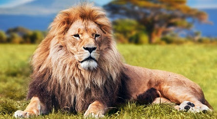
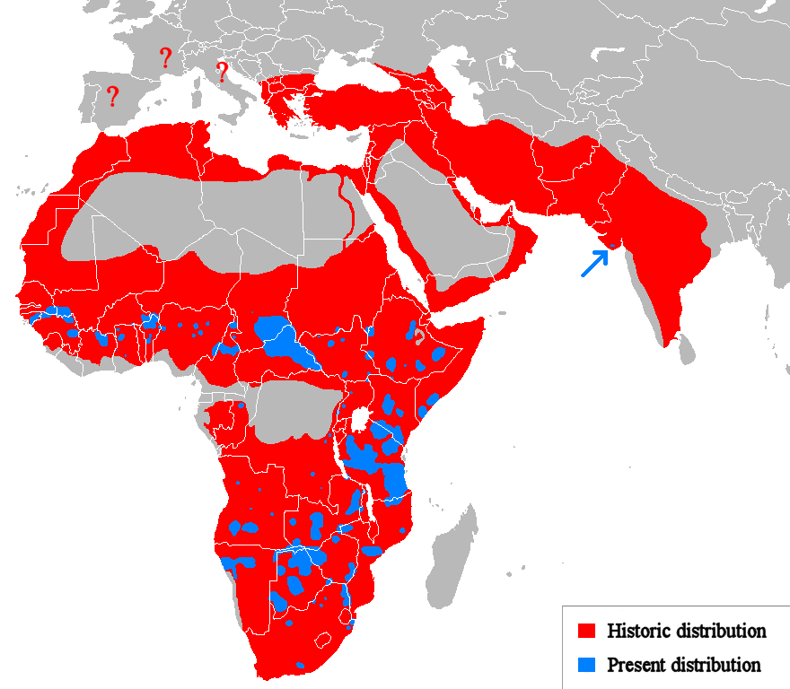

Denumire stiintifica
Panthera leo bleyenberghi
Denumire uzuala
Leu
Regn:
Animalia
Localizare
Sudul si centrul Africii

Aici punem informatiile despre animal(leu in cazul de fata)
Descriere
Leul (Panthera leo) este o specie de mamifer terestru
carnivor din subfamilia Pantherinae, familia Felidae, al doilea ca mărime – după tigru – dintre cele cinci felide mari. Este o specie socială,
trăind în grupuri formate
din câțiva masculi adulți,
femele înrudite și pui. Femelele vânează de obicei împreună, prădând mai ales copitatele mari. Leul este un prădător de vârf;
deși mănâncă hoituri atunci când
apar oportunități și se știe că vânează oameni, specia de obicei nu o face.
Leul locuiește în savane și zone cu pajiști și arbuști. Este de obicei mai diurn decât alte feline sălbatice, dar se adaptează să fie activ noaptea și în amurg.
În timpul Neoliticului, leul s-a răspândit în toată Africa, Europa de Sud-Est, Caucaz și Asia de Vest și de Sud, dar a fost redus la populații fragmentate în Africa sub-sahariană
și o populație în vestul Indiei. A fost inclusă pe Lista Roșie a IUCN ca fiind o specie vulnerabilă din 1996, deoarece populațiile din țările africane au scăzut cu aproximativ 43%
de la începutul anilor 1990. Deși cauza declinului nu este pe deplin înțeleasă, pierderea habitatului și conflictele cu oamenii sunt cele mai mari cauze de îngrijorare.